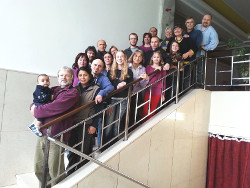

Vždyť zde na zemi přece nemáme trvalý domov, ale naším cílem je město, které jistě přijde. (Židům 13:14, Bible)
JB Nýrsko
Kdo jsme
Jednota bratrská Nýrsko je parta lidí, kterým Ježíš proměnil životy a kteří poznali, že on je jediná naděje pro tento svět. Žádní náboženští fanatici, prostě lidi, kteří se rádi smějí, hrajou spolu fotbálek, pijou kafe a povídají si.
Nechceme jen sedět a dívat se, jak jde svět do kytek. Nikomu své přesvědčení nevnucujeme, děláme užitečnější věci – podílíme se na práci s dětmi a mládeží (viz Klub Alfa), pomáháme řešit rodinné krize, drogy, násilí apod.
Občas také uspořádáme nějakou cestománii, abychom se dozvěděli, jak se kde žije (a hlavně jak se kde vaří).
Trocha historie
Pokud vás zajímá, jak Jednota bratrská vznikala, můžete si přečíst článek na oficiálních stránkách. Působení Jednoty zasáhlo i Klatovsko, o historii místního působení pojednává tento článek.
Shromáždění
Scházíme se každou neděli v prostorách DDM Nýrsko od 9:30 (bývalý kulturní dům). Dáme si sušenky, popovídáme si o tom, co se komu stalo, zazpíváme a přečteme si něco z Bible.
Čtyřikrát do roka také navštěvujeme celošumavské shromáždění v Klatovech ("Celošum"), kde se sjedeme křesťané z všech koutů západní Šumavy (Klatovy, Horažďovice, Domažlice...).
A když máme hosty, neváháme propojit shromáždění se snídaní, případně s obědem. Mimo těchto nedělních akcí se občas sejdeme u grilu, na narozeninách či při jiné milé příležitosti.
Každopádně se nebojte nás někdy navštívit – jste srdečně zváni!
{kind=link}
Kontakt
Petr Vaňkát - pastorVančurova 717
+420 608 706 887 jb.nyrsko[at]gmail.com
Odkazy
Klub Alfa - webové stránky nízkoprahového klubu pro mládež. Fotky, informace o činnosti, zprávy z akcí a spousta všeho okolo.
Jednota bratrská - oficiální webové stránky Jednoty v ČR.
KS Klatovy - webové stránky Křesťanského společenství v Klatovech.
CB Klatovy - webové stránky Církve bratrské v Klatovech.
Domažlice - webové stránky křesťanského sboru v Domažlicích.
CB Sušice - webové stránky Církve bratrské v Sušici.